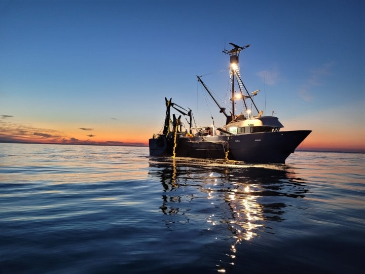

CCT listing
Content designers create patterns of content to guide the user and help them achieve their goal.
Ways of working
Content design is not copy writing. It may not even be about writing a lot of words. It’s a way of working that starts with the problem you need to resolve for users.
Building relationships
Work with others to understand the problem you need to address on behalf of the user. Other people in your team may already be doing that.
A content person comes in many guises and you may not be a part of the multidisciplinary product team. While you're gathering evidence about the user, try to build relationships across that product team.
Accordion
Both accordion assets can share the same styling. This component is from NSW DS, with minor style changes.
PIRSA
Buying or building your first home? You may be eligible for a $10,000 grant under the First Home Owner's Grant (FHOG) scheme.
This grant scheme only applies to buying or building a new home.
You can make a claim if:
- your home is newly constructed and has a total value of less than $600,000
- the land and the dwelling you intend to build has a combined value of less than $750,000.
If you are building a new home, you could also be able to apply for the Australian Government grant of $25,000. To be eligible you must:
- sign the contract between 4 June 2020 and 31 December 2020
- commence within 3 months of the contract date.
HomeBuilder complements the NSW Government’s existing First Home Owner Grant and stamp duty concessions.
The NSW Government recently announced increased thresholds for purchases of new homes and vacant land to build a new home from 1 August 2020. The threshold for existing home purchases remains unchanged.
SARDI
Buying or building your first home? You may be eligible for a $10,000 grant under the First Home Owner's Grant (FHOG) scheme.
This grant scheme only applies to buying or building a new home.
You can make a claim if:
- your home is newly constructed and has a total value of less than $600,000
- the land and the dwelling you intend to build has a combined value of less than $750,000.
If you are building a new home, you could also be able to apply for the Australian Government grant of $25,000. To be eligible you must:
- sign the contract between 4 June 2020 and 31 December 2020
- commence within 3 months of the contract date.
HomeBuilder complements the NSW Government’s existing First Home Owner Grant and stamp duty concessions.
The NSW Government recently announced increased thresholds for purchases of new homes and vacant land to build a new home from 1 August 2020. The threshold for existing home purchases remains unchanged.
Asset tiles
Image can be on or off. Width adjusts to fit container. On pages with no sidebar, like landing pages, these cards will be wider if only 3 are used, though 4 would be preferred. Heights can be different and adjust to content. Grey background on hover.

Policy, legislation and regulation, leasing and licensing, aquatic animal health, opportunities for development and research for our aquaculture industry.
Policy, legislation and regulation, leasing and licensing, aquatic animal health, opportunities for development and research for our aquaculture industry.
Policy, legislation and regulation, leasing and licensing, aquatic animal health, opportunities for development and research for our aquaculture industry.
Asset banner, full width WYSIWYG
Different variations. White and blue to ensure contrast if placed on an existing coloured background. Can have image/video and multiple buttons.
The Seafood Growth Strategy is a 10-year plan that aims to drive growth and opportunities for a sustainable and profitable seafood sector in South Australia.
Learn more Learn more
The Seafood Growth Strategy is a 10-year plan that aims to drive growth and opportunities for a sustainable and profitable seafood sector in South Australia.
Learn more Learn more
The Seafood Growth Strategy is a 10-year plan that aims to drive growth and opportunities for a sustainable and profitable seafood sector in South Australia.
Learn more Learn moreThe Seafood Growth Strategy is a 10-year plan that aims to drive growth and opportunities for a sustainable and profitable seafood sector in South Australia.
Learn moreCall the Fishwatch Hotline for information about:
- rules and regulations
- licensing and registration
- reporting shark sightings
24 hours a day, 7 days a week
Freecall 1800 065 522 Go to reporting (Fishwatch)Call the Fishwatch Hotline for information about:
- rules and regulations
- licensing and registration
- reporting shark sightings
24 hours a day, 7 days a week
Freecall 1800 065 522 Go to reporting (Fishwatch)Call the Fishwatch Hotline for information about:
- rules and regulations
- licensing and registration
- reporting shark sightings
24 hours a day, 7 days a week
Freecall 1800 065 522 Go to reporting (Fishwatch)Alerts
Global alerts based on NSW DS.
Catastrophic weather conditions are forecast this week for north and north west regions of NSW. Keep up to date with the latest bush fires alerts and warnings in your area.
Catastrophic weather conditions are forecast this week for north and north west regions of NSW. Keep up to date with the latest bush fires alerts and warnings in your area.
Catastrophic weather conditions are forecast this week for north and north west regions of NSW. Keep up to date with the latest bush fires alerts and warnings in your area.
Catastrophic weather conditions are forecast this week for north and north west regions of NSW. Keep up to date with the latest bush fires alerts and warnings in your area.
Person tiles (asset listing)
Content left aligned.

Amanda Duggan is the owner and executive producer of TAV Productions, a video content creation company that was...
Amanda Duggan is the owner and executive producer of TAV Productions, a video content creation company that was...
Amanda Duggan is the owner and executive producer of TAV Productions, a video content creation company that was...
Big tiles (asset listing)
2 should always be used, it will break the layout with just 1. 3 will also be ok.
CTA - button
See asset banner above, styling is the same.
External text links
Tabs
Ligurian honeybees are protected on KI, supporting a significant local industry. Because of their isolation, this species is vulnerable to introduced disease.
Do not bring:
- bees
- bee handling (apiary) equipment or appliances
- hive materials
- honey, honeycomb, or beeswax products.
The start of the transaction gives the user a map – the steps to take, and what to expect afterwards. The purpose of the landing page is to give the user context. It will display on the agency site that leads to the transaction.
The user arrives at this page when they’re looking to do a transaction. They’re likely to arrive via a Google search or email link. A user should be able to find what they need to know about the transaction, and how to complete it.
Vivamus a finibus lorem. Aliquam posuere consectetur nisi, in dictum ligula vestibulum sed. Duis luctus metus et feugiat suscipit. Praesent vel magna est. Suspendisse efficitur risus non neque dignissim, id ultricies mauris rhoncus. Class aptent taciti sociosqu ad litora torquent per conubia nostra, per inceptos himenaeos. Etiam et dui nec dolor efficitur dignissim at at urna.
Aliquam aliquam nisl ut urna venenatis, eget tempus orci mollis. Nunc vitae tincidunt urna. Donec maximus erat vitae gravida consequat. Aenean consequat, leo accumsan efficitur pharetra, nisl orci aliquam lacus, nec consectetur eros erat at elit. Maecenas bibendum varius purus, ac euismod leo euismod non.
Mauris tempor rhoncus rutrum. Aenean euismod arcu ipsum, fringilla suscipit orci mattis eget. Sed a ipsum viverra, imperdiet nisi eget, pulvinar libero.
Aenean pretium ultricies dapibus. Curabitur interdum orci nec diam tincidunt, sit amet tempor erat viverra. In nec dapibus libero, eu pellentesque arcu. Nunc odio ligula, porta eu condimentum non, tempor ut nulla. Nulla mattis, sem eget malesuada pretium, libero sapien tincidunt mauris, a semper risus turpis quis mi. Duis vel facilisis lacus.
Video
Same as NSW DS, with PIRSA styling. Has a max width, may be customisable in Matrix. Could also be used as generic video banner CCT?
In your team there may already be a sprint cadence that includes content design. Become familiar with agile practices such as the Kanban wall, daily stand ups and sprint planning. Understand the user journey and their needs. Get involved in usability testing sessions and iteration.
Otherwise, the content workflow may be separate from the product team. At the very least, make sure the team has real content to use, when they’re building a prototype. Also ensure your team uses real content when it does usability testing. Attend playbacks from this testing, to know how your content needs to change.
As well as designing the user experience with product team members, a content designer works to know the facts with subject matter experts.
Generic table
| Method | Description | Purpose |
|---|---|---|
|
Prototypes that include brief notes or comments that explain the rationale behind features and design choices. |
Help give context behind decisions and reminds team members why specific design elements were selected. |
|
|
Sequential images showing the main interactions or events that take place throughout a service. |
Help team members and stakeholders visualize the intended user experience. |
|
|
A diagram that visualizes a new process or service and how the organization’s internal processes, people, systems and policies will support it. |
Helps organizations understand what will be needed for a successful implementation. |
|
|
Short sentences written from the perspective of users, describing their need and the reason behind. |
Help document the different needs that a service must address, shifting the focus from creating detailed requirements to discussing user needs within a specific context. |
Hello
Aleks was here
Accordion
Both accordion assets can share the same styling. This component is from NSW DS, with minor style changes.
Accordion (root node)
Buying or building your first home? You may be eligible for a $10,000 grant under the First Home Owner's Grant (FHOG) scheme.
This grant scheme only applies to buying or building a new home.
You can make a claim if:
- your home is newly constructed and has a total value of less than $600,000
- the land and the dwelling you intend to build has a combined value of less than $750,000.
If you are building a new home, you could also be able to apply for the Australian Government grant of $25,000. To be eligible you must:
- sign the contract between 4 June 2020 and 31 December 2020
- commence within 3 months of the contract date.
HomeBuilder complements the NSW Government’s existing First Home Owner Grant and stamp duty concessions.
The NSW Government recently announced increased thresholds for purchases of new homes and vacant land to build a new home from 1 August 2020. The threshold for existing home purchases remains unchanged.
Accordion (single)
In your team there may already be a sprint cadence that includes content design. Become familiar with agile practices such as the Kanban wall, daily stand ups and sprint planning. Understand the user journey and their needs. Get involved in usability testing sessions and iteration.
Otherwise, the content workflow may be separate from the product team. At the very least, make sure the team has real content to use, when they’re building a prototype. Also ensure your team uses real content when it does usability testing. Attend playbacks from this testing, to know how your content needs to change.
As well as designing the user experience with product team members, a content designer works to know the facts with subject matter experts.
In your team there may already be a sprint cadence that includes content design. Become familiar with agile practices such as the Kanban wall, daily stand ups and sprint planning. Understand the user journey and their needs. Get involved in usability testing sessions and iteration.
Otherwise, the content workflow may be separate from the product team. At the very least, make sure the team has real content to use, when they’re building a prototype. Also ensure your team uses real content when it does usability testing. Attend playbacks from this testing, to know how your content needs to change.
As well as designing the user experience with product team members, a content designer works to know the facts with subject matter experts.
Asset tiles
Image can be on or off. Width adjusts to fit container. On pages with no sidebar, like landing pages, these cards will be wider if only 3 are used, though 4 would be preferred. Heights can be different and adjust to content. Grey background on hover.

Requirements for producers and hobby farmers about eID and available support.

Assistance for livestock agents using eID and requirements for moving stock.

Requirements and assistance for saleyards implementing eID.

Information for meat processors about receiving stock with eID.

eID requirements for organisers of agricultural shows and events.

Understand eID tags and how eID is important for biosecurity and traceability.
Asset banner


"Mullet is quick to cook making this Yelloweye Mullet pasta an easy mid-week meal. Cooked over high heat and served over a classic tomato base, serve with your favourite dried pasta." – Callum Hann
Try cooking Callum's recipePIRSA identifies the specific needs of farms and wineries to provide effective relief programs for emergency events.
Watch the video to see how we connected with producers, assisted livestock, and implemented business solutions after major bushfires in South Australia.
PIRSA identifies the specific needs of farms and wineries to provide effective relief programs for emergency events.
Watch the video to see how we connected with producers, assisted livestock, and implemented business solutions after major bushfires in South Australia.

Property owners need to prepare for bushfires and reduce risks, especially leading up to hot weather.
We provide recovery services, funding, and support options to affected regions after a bushfire event.
Large asset tiles
First asset tiles listing heading
Some content in the summary field.
Images and description fields disabled
Second asset tiles listing heading text
Images and description fields enabled

Controlling pest animals and weeds is necessary to protect agriculture, the environment and public safety.

A chronological list of Acts, including principal Acts and Acts amending those principal Acts.

Since European arrival, pest animals and weeds have been introduced, both deliberately and accidentally.

Pest animals and weeds begin to severely affect agricultural production and the environment.

Scientific advancements have transformed the control of pest animals and weeds in South Australia.

Landowners are supported by a structure of local staff providing scientifically-based advice.
Intro block
Search things here
A sustainable and prosperous South Australia
Department of Primary Industries and Regions (PIRSA) is a key economic development agency in the Government of South Australia.
SA’s regions are an economic powerhouse that drives prosperity for all South Australians. Our focus is on expanding the key regional industries by creating jobs and boosting our economy through strong regional production and vibrant regional communities.
Our state is protected by legislation supporting primary production and clean environment, including well established natural resource management, biosecurity and comprehensive food safety and quality assurance standards.
Popular links
Video content
Gandalf is the best
Gandalf is a protagonist in J. R. R. Tolkien's novels The Hobbit and The Lord of the Rings. He is a wizard, one of the Istari order, and the leader of the Company of the Ring. Tolkien took the name "Gandalf" from the Old Norse "Catalogue of Dwarves" (Dvergatal) in the Völuspá.
As a wizard and the bearer of one of the Three Rings, Gandalf has great power, but works mostly by encouraging and persuading. He sets out as Gandalf the Grey, possessing great knowledge and travelling continually. Gandalf is focused on the mission to counter the Dark Lord Sauron by destroying the One Ring. He is associated with fire; his ring of power is Narya, the Ring of Fire. As such, he delights in fireworks to entertain the hobbits of the Shire, while in great need he uses fire as a weapon. As one of the Maiar, he is an immortal spirit from Valinor, but his physical body can be killed.
In The Hobbit, Gandalf assists the 13 dwarves and the hobbit Bilbo Baggins with their quest to retake the Lonely Mountain from Smaug the dragon, but leaves them to urge the White Council to expel Sauron from his fortress of Dol Guldur. In the course of the quest, Bilbo finds a magical ring. The expulsion succeeds, but in The Lord of the Rings, Gandalf reveals that Sauron's retreat was only a feint, as he soon reappeared in Mordor. Gandalf further explains that, after years of investigation, he is sure that Bilbo's ring is the One Ring that Sauron needs to dominate the whole of Middle-earth. The Council of Elrond creates the Fellowship of the Ring, with Gandalf as its leader, to defeat Sauron by destroying the Ring. He takes them south through the Misty Mountains, but is killed fighting a Balrog, an evil spirit-being, in the underground realm of Moria. After he dies, he is sent back to Middle-earth to complete his mission as Gandalf the White. He reappears to three of the Fellowship and helps to counter the enemy in Rohan, then in Gondor, and finally at the Black Gate of Mordor, in each case largely by offering guidance. When victory is complete, he crowns Aragorn as King before leaving Middle-earth for ever to return to Valinor.
Tolkien once described Gandalf as an angel incarnate; later, both he and other scholars have likened Gandalf to the Norse god Odin in his "Wanderer" guise. Others have described Gandalf as a guide-figure who assists the protagonists, comparable to the Cumaean Sibyl who assisted Aeneas in Virgil's The Aeneid, or to the figure of Virgil in Dante's Inferno. Scholars have likened his return in white to the transfiguration of Christ; he is further described as a prophet, representing one element of Christ's threefold office of prophet, priest, and king, where the other two roles are taken by Frodo and Aragorn.
The Gandalf character has been featured in radio, television, stage, video game, music, and film adaptations, including Ralph Bakshi's 1978 animated film. His best-known portrayal is by Ian McKellen in Peter Jackson's 2001–2003 The Lord of the Rings film series, where the actor based his acclaimed performance on Tolkien himself. McKellen reprised the role in Jackson's 2012–2014 film series The Hobbit.
All meat processing and handling businesses must comply with food safety arrangements in the Primary Produce (Food Safety Schemes) (Meat) Regulations 2017, also referred to as the Meat Scheme.
Businesses requiring accreditation
You require accreditation if your business is involved in:
- growing poultry
- killing, flaying and dressing of animals
- killing and dressing of birds
- killing and processing of game animals in the field
- boning out and/or further processing of meat and poultry
- manufacturing of smallgoods
- storing of meat and/or meat product in chillers or freezers
- transportation of meat and/or meat products.
Accreditation is not required for the following businesses:
- retail businesses that sell meat in the same pack in which it was received
- businesses that slice and cut ready to eat meats for retail sale
- businesses that process meat, where the processing occurs in the preparation of meals, for sale to consumers, whether or not the meal is consumed on the premises
- restaurants, hotels, delis, cafes, lunch bars, takeaways and roadhouses where meat is prepared as part of a meal for customers or paying guests.
If you produce, rear or house any livestock for meat consumption you must also have a property identification code (PIC).
Artisan on-farm meat processing on KI
The South Australian Government has investigated the regulation of artisan meat processing on Kangaroo Island (KI).
Read the Economic analysis of meat processing options on Kangaroo Island report ().
Applying for accreditation
Use the following forms to apply for accreditation, and notify when a business changes hands or has relocated:
If you’re considering operating a business which involves processing or producing meat products, read the following legal requirements.
Biosecurity SA administers these food safety regulations under the Primary Produce (Food Safety Schemes) Act 2004:
- Primary Produce (Food Safety Schemes) (Meat Industry) Regulations 2017
- Primary Produce (Food Safety Schemes) (Seafood) Regulations 2017
- Primary Produce (Food Safety Schemes) (Plant Products) Regulations 2022
- Primary Produce (Food Safety Schemes) (Egg) Regulations 2012.
The listed regulations cover production of bivalve mollusc (seafood), eggs, and growing seed sprouts. Businesses may also need to apply for accreditation if involved in any of those respective commodities.
Accreditation steps
- Submit an application for accreditation, including the relevant application fee. Once these are received, we will review the application and arrange to assess your operation against the relevant standards. The assessment will include the premises and equipment or vehicle(s).
Please note: meat processing operations, including cold storage and transportation, are charged for this assessment.
- You will be provided with a written report detailing the outcome of the assessment, including any areas that need to be addressed for compliance with the relevant meat Australian standards.
If your operation does not meet the standards for construction or hygiene, accreditation won’t be issued until all of the minimum requirements have been completed. - We will assist you with the requirement to develop a food safety arrangement. You will need to:
- describe your processes in the document and ensure it reflects the food safety practices you will maintain
- develop and keep records that your auditor or assessor can advise you about.
- On approval of your application, we will provide:
- a certificate outlining the specific food processing activities that are permitted
- conditions of accreditation.
It is recommended you display your certificate to inform your customers and other relevant state authorities of your accreditation. Please note:
- If you operate a meat transport business, a sticker will be provided for each vehicle you operate. The label must be affixed to the driver's side, rear of the vehicle, 1.5 to 2 metres from ground level.
- If you are a meatworks involved in the slaughter and processing of livestock, the official mark (brand) for the stamping of carcasses is issued by Food Safety Program at the meatworks' cost.
- Once you are accredited, you will be invoiced for the annual fee, or a portion of the annual fee depending on the number of months that remain in the current financial year.
- We will contact you about the routine audit of your business and food safety arrangements. The frequency of audits depends on the type of business and compliance with the minimum food safety standards. The cost of the audits is borne by the accredited operator.
- Meat processing facilities are normally audited every 3 months (quarterly) during an initial Interim Approval Period (IAP).
- The frequency of audits is reduced to half yearly when your Approved Food Safety Arrangement has been fully implemented.
- Audits are normally unannounced.
For more information see the Food safety program compliance and enforcement policy ()
Accreditation fees
Annual fee includes both of the following:
- administration fee for all accredited operators – $267
- application fee – $199
- activities depending on the nature and complexity of your operation – $134 per point.
This activity-based points loading applies from 1 July 2024 to 30 June 2025.
Each year all regulated fees and charges in South Australia are increased by a percentage, determined by Treasury. The increase in fees and charges under the Primary Produce (Food Safety Schemes) (Meat) Regulations 2017 took effect from 1 July 2022.
Export establishments
All export meat processing establishments registered with the Commonwealth Department of Agriculture, Fisheries and Forestry under the Commonwealth Export Control Act are also required to maintain accreditation under the Primary Produce (Food Safety Schemes) (Meat) Regulations 2017.
Export meat processing establishments that process totally for export (i.e. where no product enters the domestic market) need only pay the administration fee.
Export meat processing establishments that also trade on the domestic market are required to pay the full accreditation fee.
Domestic slaughtering of animals and birds
Premises involved in slaughtering animals or birds are scored on the basis of whether the process is manual or mechanised (automated).
For plants using a mechanised chain during all or part of the production process, 8 points are added to the loading, while 4 points are added to those works that process animals or birds manually. The same loading (8 or 4 points) applies to slaughtering animals for pet food.
A further 3 points are added if the operation involves slaughtering for specialty meats, such as emu, ostrich, camel or buffalo.
Manufacturing of smallgoods for wholesale
Manufacturing fermented, cooked or cured and raw smallgoods is identified as separate operations and a loading of 4 points is added for each process.
Boning and further processing for wholesale
For operations involved in boning carcases, producing primal or other cuts of meat, packing meat and offal, add 4 points to the loading.
This activity also includes boning and further processing of poultry.
Game meat processing
For operations involving the boning out and further processing of wild game carcases, add 4 points. Add a further 1 point for each field chiller owned by the company.
Game meat processing in the field
For operations involving processing wild game (kangaroo) in the field, add 1 point for each kangaroo tray and 1 point for each field chiller owned by the field processor.
Cold storage, distribution and transportation
Where the operation involves storage of meat or meat products, and where no other processing occurs, 2 points are added to the loading.
If the operation also involves distribution and transportation, 1 point is added for each vehicle or semi-trailer used to transport meat or meat products for human consumption.
Processing of pet meat
Pet meat processing works (non-slaughtering) are monitored by the Biosecurity SA Food Safety Program for compliance with relevant standards.
These operations pose minimal risk to human health and are not subject to loading. However, they are required to pay the administration fee to maintain their accreditation under the Act.
Staffing
A staffing component is also incorporated into the loading. Operations with more employees involved in the processing operation accrue more points. Staff includes both contract and casual labour and is calculated in full time equivalents. The following applies when calculating the loading for the staffing component.
| Number of staff | Points |
|---|---|
| Not more than 6 | 2 points |
| More than 6 but not more than 11 | 6 points |
| More than 11 but not more than 26 | 12 points |
| More than 26 but not more than 40 | 20 points |
| More than 40 but not more than 60 | 30 points |
| More than 60 | 40 points |
Staff loading is not included where the operation involves:
- processing of pet meat, other than slaughtering
- storage, distribution or transportation of meat and meat products and where no other processing occurs
- field processing of game such as kangaroo
- retail or wholesale processing of meat (see below).
Retail or wholesale meat processing operation
The operation is primarily a retail business that may supply meat or meat products to the hospitality and catering industry (hotels, restaurants etc.) or to other retail outlets.
To be considered in this category, over 50% (by mass) of meat sold must be a direct retail sale to the consumer. The quantity of meat wholesaled is not to exceed one tonne per week.
The administration fee plus the following point loading will apply to retail or wholesale meat processing operations.
| Type of meat processing operation | Points |
|---|---|
| Processing raw meat (boning, slicing, dicing, mincing, etc.) and raw smallgoods (sausages, patties, corned and pickled meats, etc.) | 1 point |
| Producing ready-to-eat smallgoods through a process of cooking or curing (e.g. manufactured meats and processed meat products) | 1 point |
| Producing ready-to-eat smallgoods by a process involving fermentation | 1 point |
Conditions of accreditation
It is a requirement of accreditation for businesses to comply with the Australian Standard for the hygienic production and transportation of meat and meat products for human consumption (PDF).
Businesses must implement a food safety arrangement which includes a HACCP plan covering activities accredited to be undertaken on site. A generic food safety arrangement and generic HACCP plans are available:
- Generic meat food safety arrangement ()
- Raw and further processing of raw meat and poultry HACCP plan ()
- Cooked heat treated salted and cured meats HACCP plan ()
- In pack surface pasteurisation (IPSP) HACCP plan ()
- Dry cured meats HACCP plan ()
- Dried meats HACCP plan ()
- Cold storage and distribution of meat and meat products HACCP plan ()
- Transporting meat and meat products HACCP plan ()
- Meat transport food safety arrangement ()
Related information
- Food Safety Management Tools - Standard 3.2.2A
- Factsheet - Illegal processing and sale of meat ( or )
- Poultry health and diseases
- Accreditation requirements for wild game field harvesting ()
- Guidelines for the safe manufacture of smallgoods 2nd edition (PDF)
- Listeria control regulatory guidelines ()
- Listeria monocytogenes in smallgoods: risks and controls ()